5 Results - EMPATH
Empath is a tool for generating high-quality lexical categories (Fast, Chen, and Bernstein 2016). Transforming the bag-of-words into bags of lexical categories reduces the number of dimensions and improves the interpretability of the results.
Ensemble classification on Empath categories predicts character gender with an F1 score of 78.5% (table 5.1).
To examine the interaction between author gender and character writing, I plotted lexical category frequency for male and female characters by author gender.
| Predicted Male | Predicted Female | |
|---|---|---|
| True Male | 3988 | 1012 |
| True Female | 1138 | 3862 |

Figure 5.1: First two principle components of empath categories

 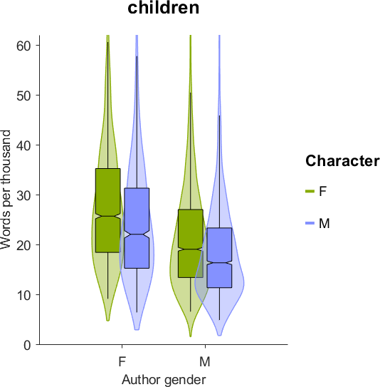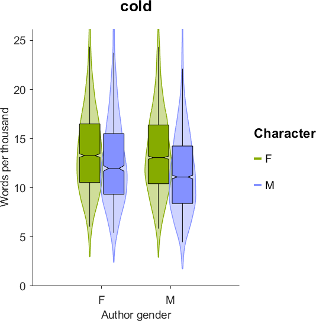
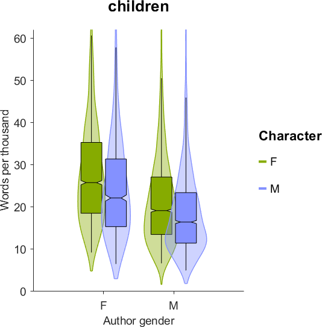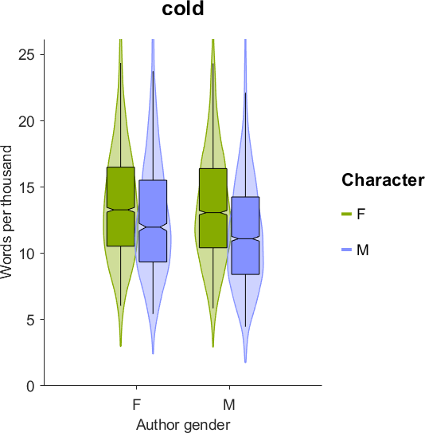 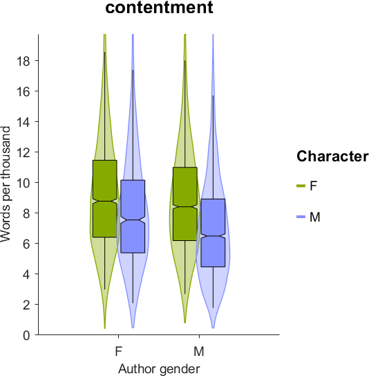
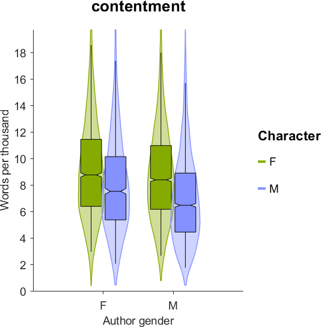


 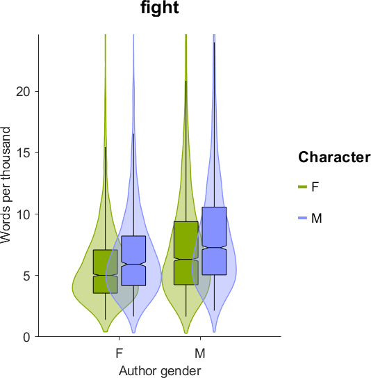
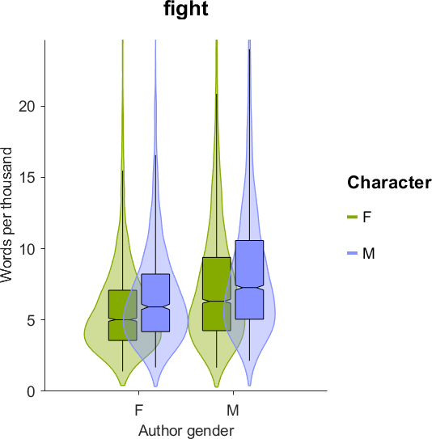 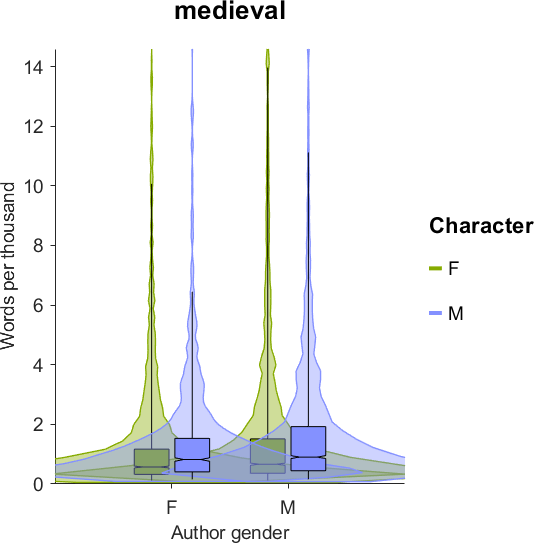
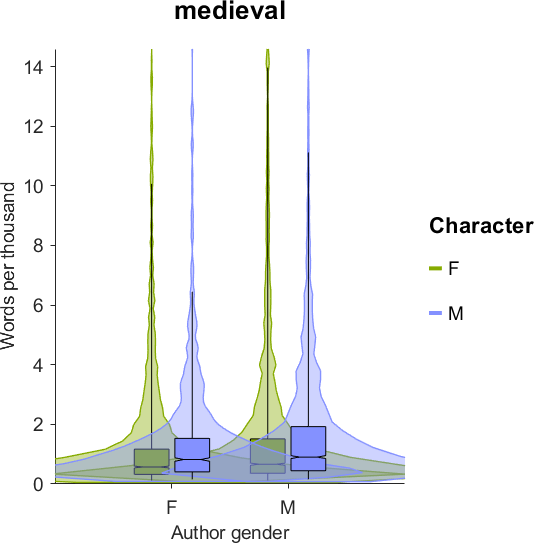
 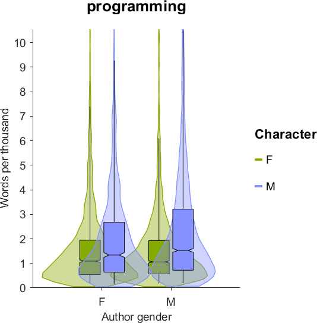
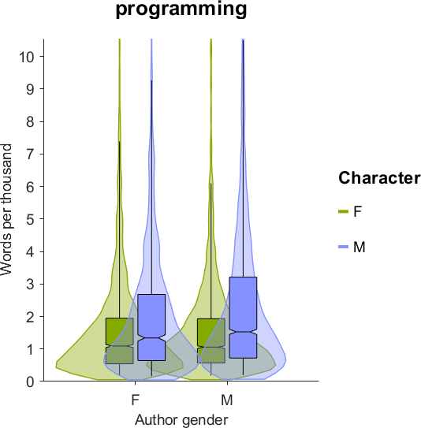 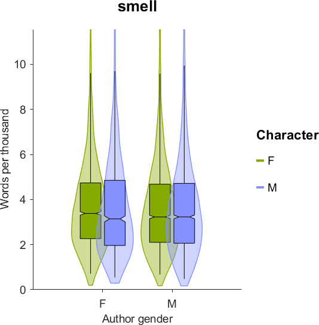
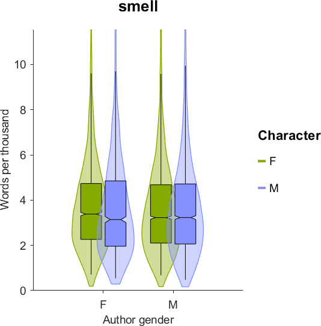

 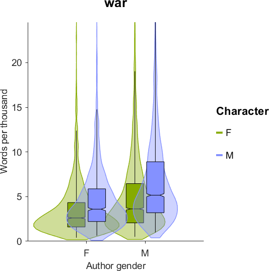
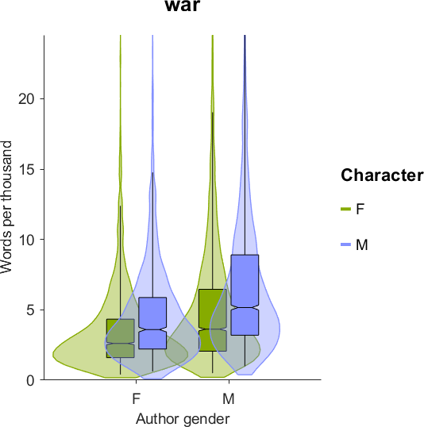